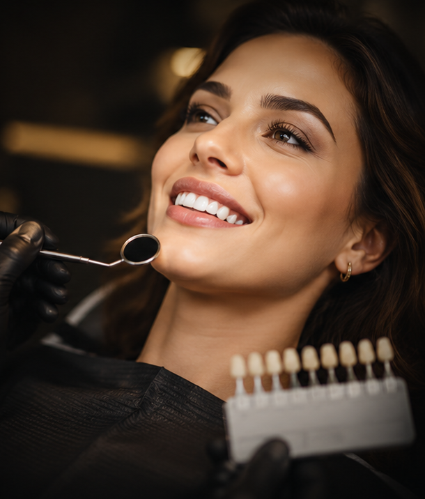

Fațete dentare
Planificarea fațetelor pornește de la proporții, nuanță, linia zâmbetului și expresia feței. Recomandarea se stabilește după evaluare, în funcție de indicație și obiectiv.
Stomatologie premium
La ZEN Clinics, stomatologia înseamnă mai mult decât tratament — înseamnă estetică, funcționalitate și grijă autentică pentru fiecare detaliu. Oferim soluții moderne, personalizate, pentru un zâmbet natural, echilibrat și plin de încredere.

Tratamente
Planificarea fațetelor pornește de la proporții, nuanță, linia zâmbetului și expresia feței. Recomandarea se stabilește după evaluare, în funcție de indicație și obiectiv.
Albirea poate fi discutată pentru un aspect mai luminos al zâmbetului, cu atenție la sensibilitate, istoricul dentar și așteptări realiste.
Restaurările urmăresc echilibrul dintre estetică și funcționalitate, cu materiale alese în funcție de caz și recomandarea medicului.
Consultația clarifică opțiunile potrivite, limitele tratamentelor și pașii necesari pentru un plan personalizat.
Stomatologie estetică
La ZEN Clinics, fațetele dentare sunt create pentru a reda armonia zâmbetului tău într-un mod natural, elegant și personalizat. Fiecare tratament este planificat cu atenție, în funcție de trăsăturile feței, nuanța dinților și rezultatul pe care ți-l dorești.
Fațetele pot corecta imperfecțiuni precum discromii, spații inestetice, mici fracturi sau forme neuniforme, oferind un aspect echilibrat și luminos. Abordarea noastră pune accent pe estetică fină, confort și rezultate care te reprezintă.
La ZEN Clinics, experiența în stomatologie estetică înseamnă precizie, materiale premium și grijă reală pentru fiecare detaliu, astfel încât zâmbetul tău să inspire încredere și naturalețe.
Vreau o programare
Prețuri stomatologie
Costurile se confirmă individual după evaluare. Lista are rol orientativ și poate fi completată cu informațiile reale ale clinicii.
Vezi prețuri